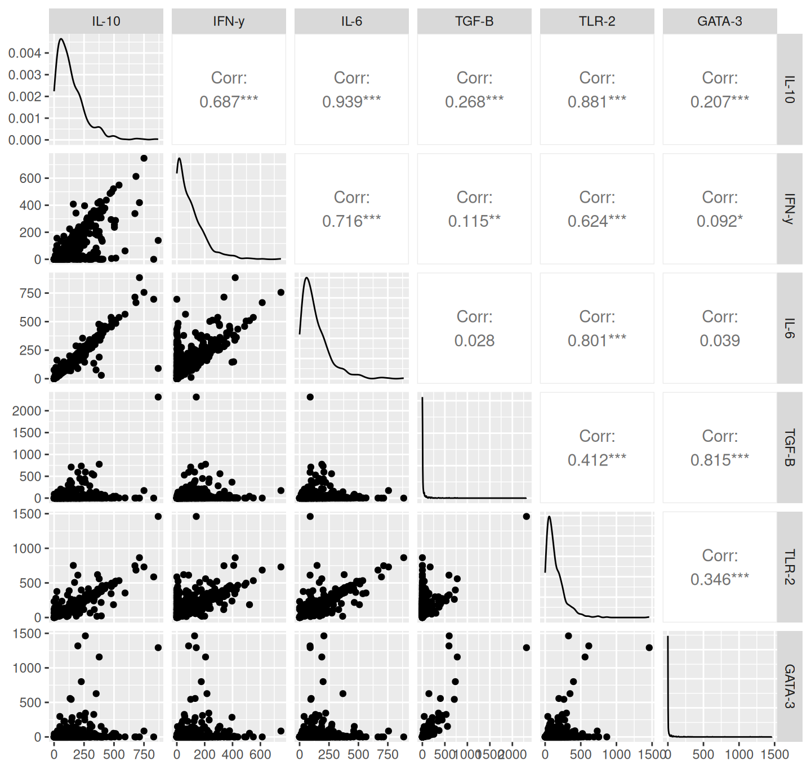

Immunity
A key component of this project is the resistance to and tolerance of Borrelia infection in Peromyscus mice. As such, we obtained from NEON ear tissue samples from 976 individuals across three seasons of their collection efforts (2022 - 2024). From these samples, we measured the expression of six important genes thought to be associated with resistance and tolerance (Table 3). We also quantified Borrelia infection and burden, using Droplet Digital Polymerase Chain Reaction (ddPCR) techniques. The ddPCR variant is more sensitive than the traditional PCR that NEON uses to determine infection status3. Gene expression and Borrelia infection information were collected at the University of South Florida (USF). Due to limitations in the amount of tissue available in 2022, ddPCR was not conducted in this year. Additional tissue from each individual was obtained in 2023 and 2024 to facilitate this. Because the expression (and burden) data are highly right-skewed (many low-values), we present and analyze \(log(x + 1)\) transforms of these variables throughout this project.
| gene | triplex | group |
|---|---|---|
| IL-10 | 1 | resistance |
| IFN-y | 1 | resistance |
| IL-6 | 1 | resistance |
| TGF-B | 2 | resistance |
| TLR-2 | 2 | tolerance |
| GATA-3 | 2 | tolerance |
Genetic correlations
First, we look at how the expression of these genes traits intercorrelated among these individuals. Figure 2 shows that the genetic traits are nearly all significantly intercorrelated (the lone exception being TGF-B and IL-6, which are uncorrelated). Notably, the resistance traits (IL-10, IFN-y, IL-6, TLR-2) are most strongly correlated with each other and, similarly, the tolerance traits (TGF-B and GATA-3) are most strongly correlated with each each other.

Figure 2: Correlations among log-transformed genetic expression traits. IL-10, IFN-y, IL-6, and TLR-2 are thought to be resistance-associated genes and TGF-B and GATA-3 are throught to be tolerance-associated.
PCA
The resistance and tolerance genetic traits also broadly group together in a principal component analysis (PCA; Figure 3), with “resistance” expression aligning with the first principal component (PC) and “tolerance” expression aligning with the second PC. Overall, these first two PCs explain 87% of the variation among the genetic expression varaibles (Table 4). It also appears that Borrelia infection status is not strongly associated with either resistance or tolerance, but Borrelia burden may be associated with tolerance expression (Figure Figure 3, blue lines).

Figure 3: Principal component analysis of genetic expression traits. Traits were log(x+1) transformed prior to the analysis.
| PC1 | PC2 | PC3 | PC4 | PC5 | PC6 | |
|---|---|---|---|---|---|---|
| Eigenvalue | 3.44 | 1.75 | 0.56 | 0.16 | 0.06 | 0.03 |
| Proportion Explained | 0.57 | 0.29 | 0.09 | 0.03 | 0.01 | 0.01 |
| Cumulative Proportion | 0.57 | 0.86 | 0.96 | 0.98 | 0.99 | 1.00 |
| variable | PC1 | PC2 | type | perms | rsquared | pvals |
|---|---|---|---|---|---|---|
| log_burden | 0.08 | 1.00 | vector | 999 | 0.02 | 0.02 |
| Bb_statusNegative | 0.02 | -0.13 | factor | 999 | 0.02 | 0.00 |
| Bb_statusPositive | 0.01 | 0.00 | factor | 999 | 0.02 | 0.00 |
Multivariate regression of burden and infection against the first
two genetic expression PCs implies that only the “tolerance” genes (PC2) are
significantly associated with the Borrelia infection or burden
(6). This approach is admittedly simplistic, since we aren’t
accounting for spatial or temporal variation. These relationships will be
assessed more vigorously in later sections.
| Response | Predictor | Coef | SE | t | P | r-squared |
|---|---|---|---|---|---|---|
| Bb_infected | (Intercept) | 0.56 | 0.03 | 20.12 | 0.00 | 0.05 |
| Bb_infected | expr_PC1 | -0.03 | 0.09 | -0.37 | 0.71 | 0.05 |
| Bb_infected | expr_PC2 | 0.37 | 0.09 | 4.04 | 0.00 | 0.05 |
| log_burden | (Intercept) | 1.80 | 0.12 | 15.42 | 0.00 | 0.02 |
| log_burden | expr_PC1 | 0.08 | 0.36 | 0.23 | 0.82 | 0.02 |
| log_burden | expr_PC2 | 1.05 | 0.38 | 2.74 | 0.01 | 0.02 |
Citation needed↩︎